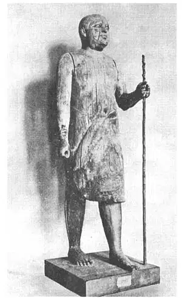

33
GIANTS AND PYGMIES
巨像和小雕

THE Egyptian sculpture in the full round was usually giant size, as tall as a house, or the other extreme—tiny statues only an inch or so high. The statues of their kings and important people, the Egyptian sculptors usually made of giant size—colossal. They thought a statue the size of an ordinary man or woman was not nearly big enough for a king or a queen.
The biggest statue in the world is the Great Sphinx which is near the three great pyramids. It is a huge lion with a king’s head. The Egyptians liked to combine men and animals in this way, but more often they put an animal’s head on a man’s body. A cat’s head or a bird’s head on a man’s body seems to us most unpleasant—a mon-strosity that makes us shudder. But a man’s head on an animal’s body seems only a myth and doesn’t shock us.
The Great Sphinx was supposed to be the God of the Morning and so faces east— always facing the rising sun and gazing at it unblink-ingly as he has done each morning for thousands of years. His nose is as tall as a man. The triangular pieces at the sides of his head are not hair, they are a peculiar hood.
There are many more sphinxes in Egypt, but all much smaller than the Great Sphinx, and these smaller ones usually were arranged, with many of them in a double row, to form an avenue leading up to some temple.
Farther up the Nile, there are two colossal seated figures sitting on thrones side by side, gazing out over the plain. They are called, on account of their colossal size, the Colossi, and each is made out of a single stone. They are weather-beaten and broken, but you do not need much imagination to see in your mind’s eye what they once were. They of course are Egyptian kings—or, rather, two statues of the same king. These two also face the sun as it rises in the east and one of them is called the Vocal Memnon—that is, the singing or sounding Memnon, though Memnon was not the king’s name. His name was Amenhotep. We know the names of few of the old sculptors who made the statues, but we do know the name of this sculptor who made these statues of Amenhotep, for he had the same name as the king. Perhaps he was a slave. When we had slavery in our own country, a slave often used to take the name of his master.
For some reason that no one has ever perfectly explained, the Vocal Memnon gave forth sounds, perhaps like the tones of a great organ when the sun rose, a hymn to a new day, though the Vocal Memnon did not sing every morning or even every year. When it did sing, it was supposed to be a sign of something—an omen people called it—but an omen of what, no one knows. It is believed that about the time of Christ it was upset by an earthquake and that when it was replaced, it ceased its morning song. It has not sung for nearly two thousand years and some people doubt that it ever did, though people even at the time of Christ used to travel long distances just to hear it sing and were disappointed if it didn’t. Many who did hear it, however, have carved on the base their names and date when they did hear it. So there seems to be little doubt that it did sing once upon a time. Some scientists think the sun’s rays striking the cold stone in the morning wrought some change that made the sound. It is one of the mysteries of which there are so many in Egypt.
It is strange that one of the oldest pieces of sculpture in the world is made of wood— strange because wood of course does not usually last as long as stone. Strange, too, that it is not the statue of a king or a queen or a god, for that is what the Egyptians usually made. What do you suppose it is? A school-teacher!
This piece of sculpture is the figure of a rather small, fat, baldheaded man carrying a tall walking-stick. The statue is small, smaller than a real man, perhaps to show that he was not a king or any important person. By some people he is called the Schoolmaster of Boulac. So you can see what a school-teacher may have looked like thousands of years ago. But others say there were no regular schools or teachers then, and they call him the sheik or chief of a tribe. Still others say no, he looks like the boss of a gang of workmen, and they believe he was the boss of a gang that worked on the Great Pyramid. So yon can take your choice, for no one knows his name or what he was or who made him. The statue is in the great museum at Cairo, the capital of Egypt. Though it was made so long ago, it looks much more natural and lifelike than later Egyptian sculpture—like a real person. It is said that even the old Egyptians thought it so natural that they chained its feet to keep it from walking off!

No.33-2 THE SCHOOLMASTER OF
BOULAC（布拉克校长）
Another figure made about the same time is of a man seated and holding a writing tablet on his lap. It is of stone and it was painted—not the natural color of a man but—-guess what color? Red! He was a professional writer—that is, one of the few men who knew how to write and made a business of writing for those who could not write, and most people at that time could not. Think of hiring a stranger to write your letters! Such a person was called a scribe. He was a kind of secretary who took dictation. Even kings and queens could not write and had to have scribes to write for them. This figure is now in the Louvre in Paris, to which place, of course, it was carried from Egypt.
Often Egyptian sculptors went to the other extreme in making tiny statuettes, some only a few inches high, of their kings and queens, their gods and goddesses and sacred animals. Most of these miniature statues were cut out of the hardest kinds of stone— stone that would turn the edge of our modern tools. We suspect that they must have been cut with flint tools instead of steel tools—as, nowadays, a diamond, the very hardest of all stones, has to be cut with another diamond or shaped by being rubbed with diamond dust.
The beetle was sacred in Egypt and called a scarab, and numberless scarabs made of clay and stone were made to be suspended from the neck, where they acted as a charm for the wearer. So popular are these charms that they are manufactured to-day in great quantities and sold to travelers as real antiques.
【中文阅读】
埃及的雕刻要么非常庞大，像房子那么高，要么就陷入另一个极端，只有一英寸那么点高。如果雕刻国王和大人物，埃及雕刻家通常会把雕刻做大——甚至超大。他们认为，以正常人的标准来雕刻国王或王后不足以体现国王或王后的尊贵。
世界上最大的雕像是紧邻三大金字塔的斯芬克斯狮身人面像。它由国王的脑袋和巨狮的身子所组成。埃及人雕刻时喜欢把人和动物结合在一起，他们更多的是把动物的头放在人身上。如果在人身上安一个猫头或鸟头，就会很难看——令人毛骨悚然。但如果在动物身上安上一个人头，就只会增加神秘感，不会觉得吓人。
斯芬克斯狮身人面像被认作清晨之神。他面朝东方，几千年来日复一日，每天清晨眼睛眨也不眨，迎接初升的太阳。单单他的鼻子就有一人之高。他脑袋两侧的三角形东西不是头发，而是一种奇怪的头巾。
埃及还有很多狮身人面像，不过都比斯芬克斯狮身人面像小。这些小狮身人面像通常组成两排，给神庙形成一个通道。
尼罗河上游有两座巨型雕像，并肩坐在王位上，眺望远方的平原。每座都由一块单独的石头雕成，由于身躯大，所以就被称作“巨像”。两座巨像久经风雨，已经破裂了，但你不用多想就能看出它们曾经的壮观。它们当然是埃及国王的雕像，或者更确切地说是同一国王的两座雕像。它们也是面朝太阳升起的东方，其中一个叫“发声门农”，意思是会唱歌或能发声。不过，国王的名字不叫“门农”，而叫阿蒙霍特普。关于古代雕刻家的名字，我们知之甚少，但我们知道雕刻阿蒙霍特普两座巨像的雕刻家名字，因为他和国王同名。他可能是个奴隶。譬如美国在实行奴隶制时，奴隶通常跟随主人同名。
太阳初升时，发声门农石像会发声，好像是用歌声迎接新的一天，尽管不是每天或者每年都唱。当石像歌唱时，据说是一种征兆，但具体预兆什么，又没人知道。据说这座雕像在基督时代曾被地震震倒，等重新安放后它就不再唱晨歌了。它差不多有两千年没唱歌了，有人怀疑它过去是否真的唱过。不过在基督时代，人们长途跋涉赶来只为听它的歌声，要是它刚好没有发声，人们只好失望而归。然而那些听到歌声的人们便在雕像底座上刻录自己的名字以及听到歌声的日期。所以，毫无疑问，门农石像以前的确发声歌唱过。有科学家认为，清晨的阳光照在冰冷的石头上会产生某种奇妙的变化，从而会发出声音。这也是埃及众多神秘事物中的一个。
你说奇怪不奇怪，世界上最古老的一座雕像竟然是用木头雕成的。说它奇怪，是因为木头通常没有石头那么持久。更奇怪的是，这座雕像不是埃及人经常雕刻的国王、王后或神祇。你想是谁的雕像呢？居然是位学校教师！
这座雕像刻的是一个矮小、肥胖，又秃顶的男人，他手里拿着一根长拐杖。雕像尺寸很小，比真人小很多，大概是想表明这个人并非国王，也不是什么重要人物。有 人叫他“布拉克校长”。从中可以看出几千年前教师的样子。但也有人说那时还没有正规的学校和教师呢，所以就把他当做一个部落的酋长。仍然有不赞成这种看法的，他们觉得他像个工头，甚至坚信他就是当年建造埃及大金字塔的工头。当然，究竟相信谁，是我们自己的事，因为没人知道他的名字，是做什么的，也没人知道是谁把它雕出来的。这座雕像现收藏在埃及首都开罗的大博物馆里。虽然它的雕刻年代很久远，但它却比后期的埃及雕像看上去更加生气勃勃，就像一个真人。据说，当时的埃及人因为它太逼真，而用链子把它双脚绑住，防止他溜走。
差不多同时完成的还有另外一座雕像，刻的是一个人坐着，膝盖上放着一张书写纸。这是一座石雕，还涂了色，但却不是真人的肤色。猜猜看是什么颜色？红色！雕像刻的是一个书吏，专靠替不识字的人代写为生，那时会写字的人寥寥无几。很难想象请一个陌生人代写信吧。这种替人代写的人称为文士。那时，甚至国王和王后也不会写字，而不得不叫文士代写。这座雕像现存巴黎卢浮宫。当然，它是从埃及运过去的。
埃及雕刻家在刻小雕像时通常会走极端。有些雕像只有几英寸高，哪怕是国王、王后、女神和神兽。这些雕像大多由最坚硬的石头刻成，这种石头会使我们的现代工具锋刃尽失。我们猜测，它们不是用钢制工具，而是用燧石刻成的，就像现在，最坚硬的石头——钻石，必须用另一种钻石才能切割或用钻石粉打磨成型。
甲虫在埃及被称为圣虫。人们用土、石做过无数个圣甲虫，挂在脖子上当作吉祥物。因为这些吉祥物很受欢迎，所以到了今天，埃及还在大量制作，并当作古董卖给游客。